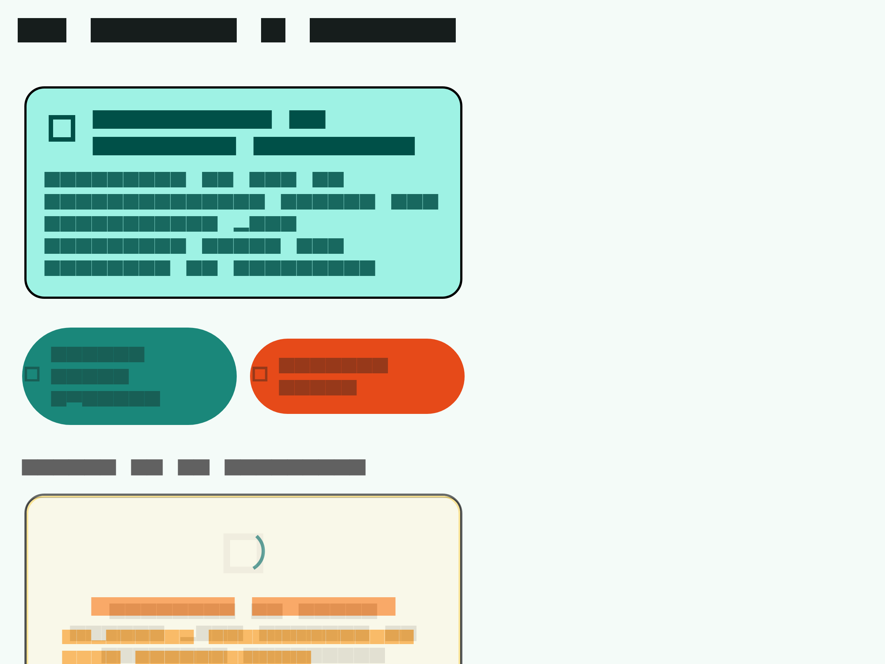
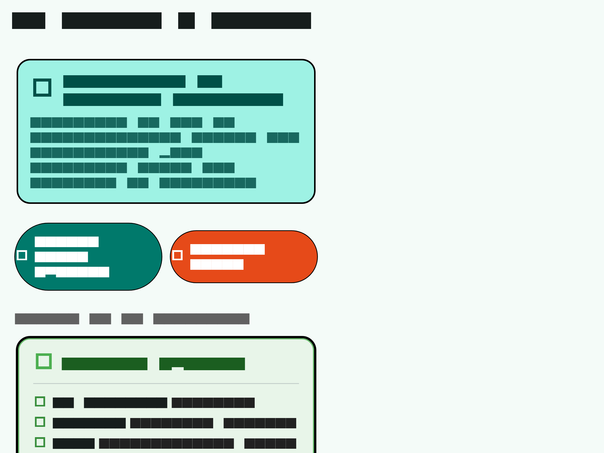
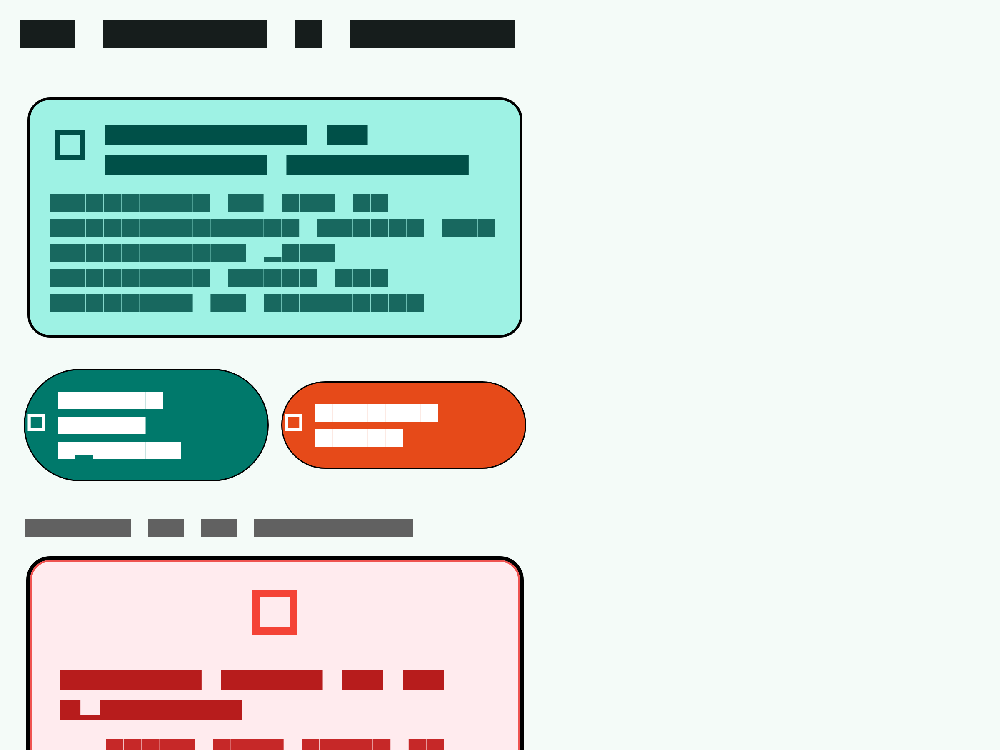
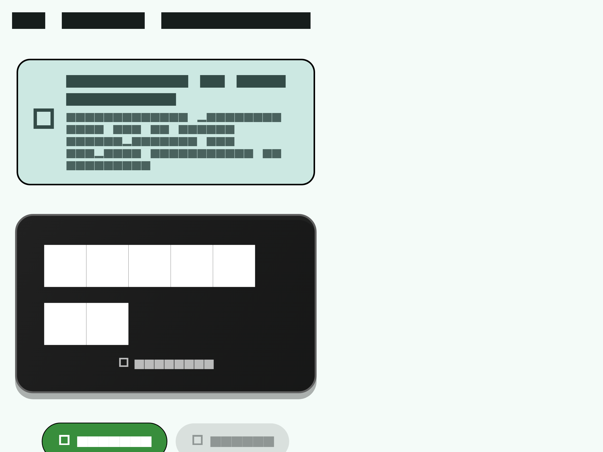
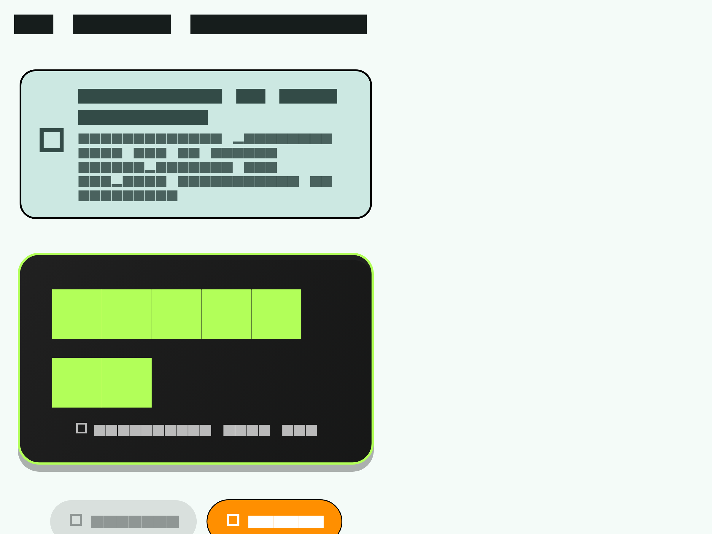
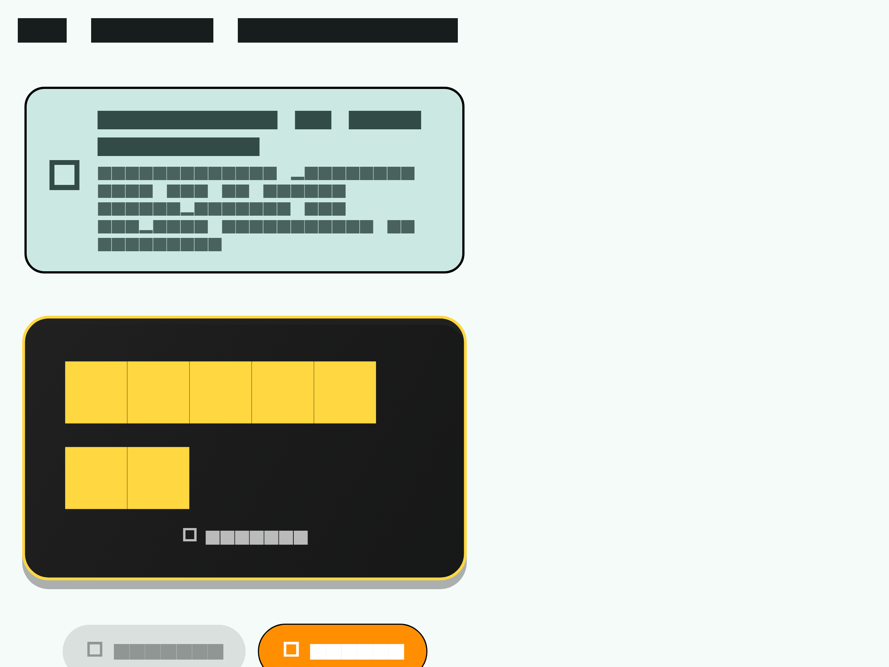
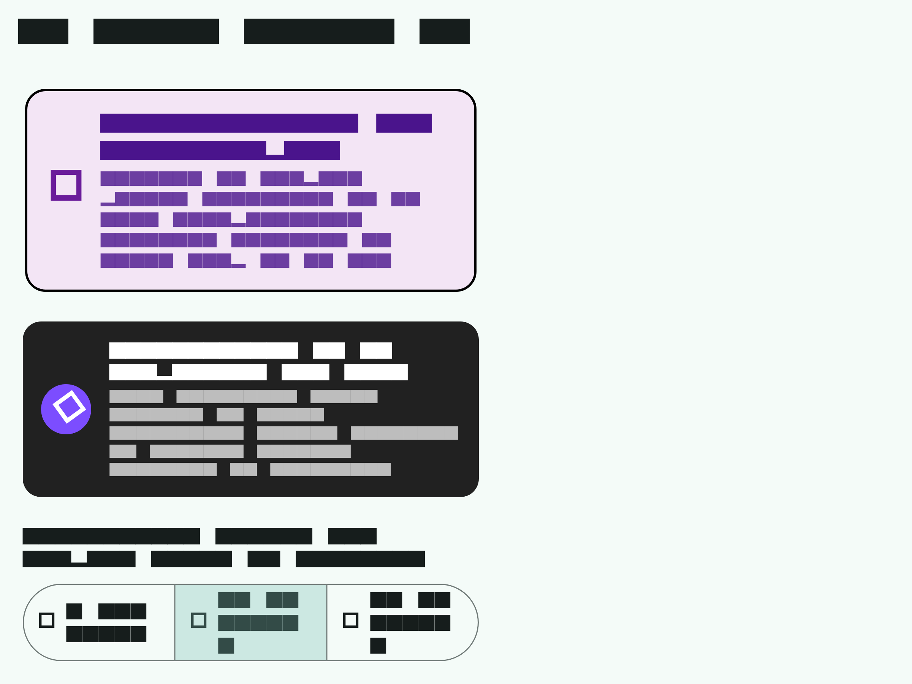
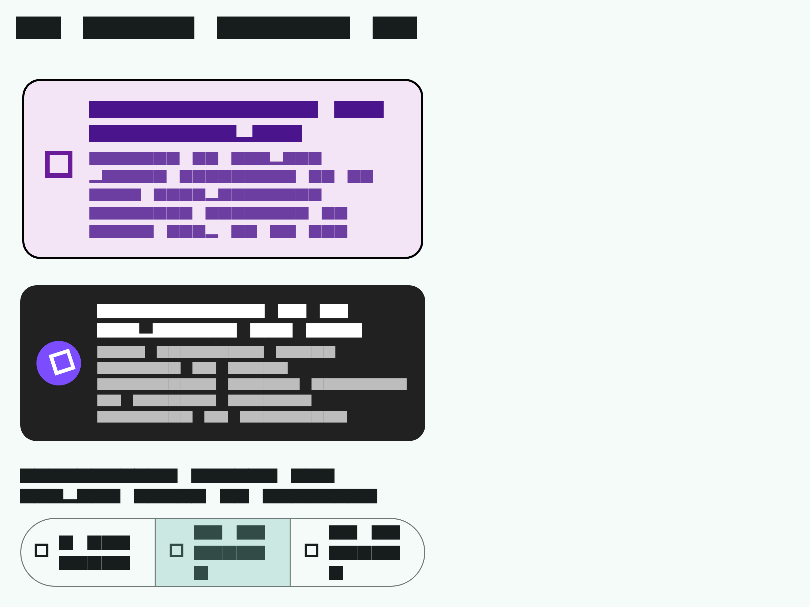
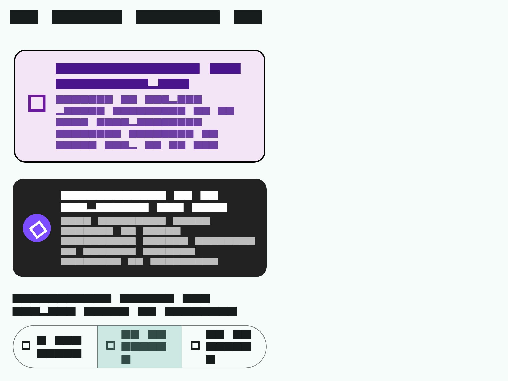

| 👨🎓 Estudiante: | Santiago Morales |
| 📚 Asignatura: | Desarrollo de Aplicaciones Móviles |
| 🌿 Flujo GitFlow: | main ◄── dev ◄── feature/taller_segundo_plano |
| ⚙️ Framework & Entorno: | Flutter 3.47.5 • Dart 3.13.4 (Linux / Desktop / Mobile) |
| 📅 Fecha de Entrega: | 4 de Octubre de 2026 |
Se implementó un servicio simulado (FutureService) que consulta datos utilizando Future.delayed con una latencia de 2.5 segundos. La interfaz de usuario utiliza async/await para esperar el resultado sin congelar el hilo principal.
Al hacer clic en el botón de consulta, la aplicación pasa inmediatamente al estado Cargando... mostrando un CircularProgressIndicator y deshabilitando los botones para evitar peticiones duplicadas.

Tras completarse el Future.delayed, el resultado es recibido y presentado en una tarjeta visual estilizada con los datos del usuario retornado.

Si la consulta asíncrona falla (probado mediante el botón Simular Error), el bloque try/catch captura la excepción y muestra el estado de error en pantalla.

Los mensajes impresos en la consola demuestran el flujo asíncrono no bloqueante:
Implementación de un cronómetro de precisión con Timer.periodic(Duration(milliseconds: 100)) que actualiza el marcador digital cada 100 ms y gestiona la limpieza de memoria al pausar o salir de la vista (dispose()).
El marcador muestra 00:00.0 y el estado del cronómetro es DETENIDO. Únicamente el botón Iniciar está activo.

Al presionar Iniciar, el objeto Timer acumula milisegundos y redibuja la UI reactivamente sin pérdida de rendimiento.

Al pulsar Pausar, se ejecuta _timer?.cancel() conservando el tiempo transcurrido (00:02.4). Los botones Reanudar y Reiniciar quedan disponibles.

Para evitar bloquear el hilo principal (UI Event Loop), se ejecuta una función CPU-bound intensiva (cálculo de suma de números primos hasta 15 y 30 millones) dentro de un Isolate.spawn secundario con comunicación bidireccional mediante ReceivePort y SendPort.
Mientras el Isolate realiza millones de iteraciones de cálculo en un hilo secundario de la CPU, un widget animado que gira continuamente en pantalla demuestra que la interfaz permanece fluida y respondiendo sin congelamientos.

El Isolate secundario transmite periódicamente su progreso al hilo principal mediante sendPort.send({'type': 'PROGRESS', 'value': progress}), actualizando la barra de progreso en vivo.

Al concluir el cómputo, el Isolate retorna el resultado final de la suma y los milisegundos consumidos (por ejemplo: 1,250 ms), cerrando inmediatamente el ReceivePort y liberando el hilo.
